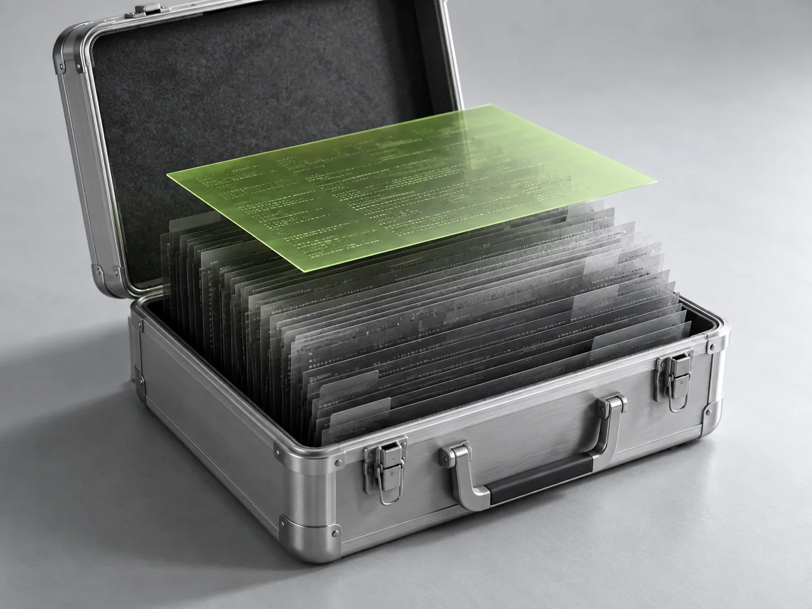
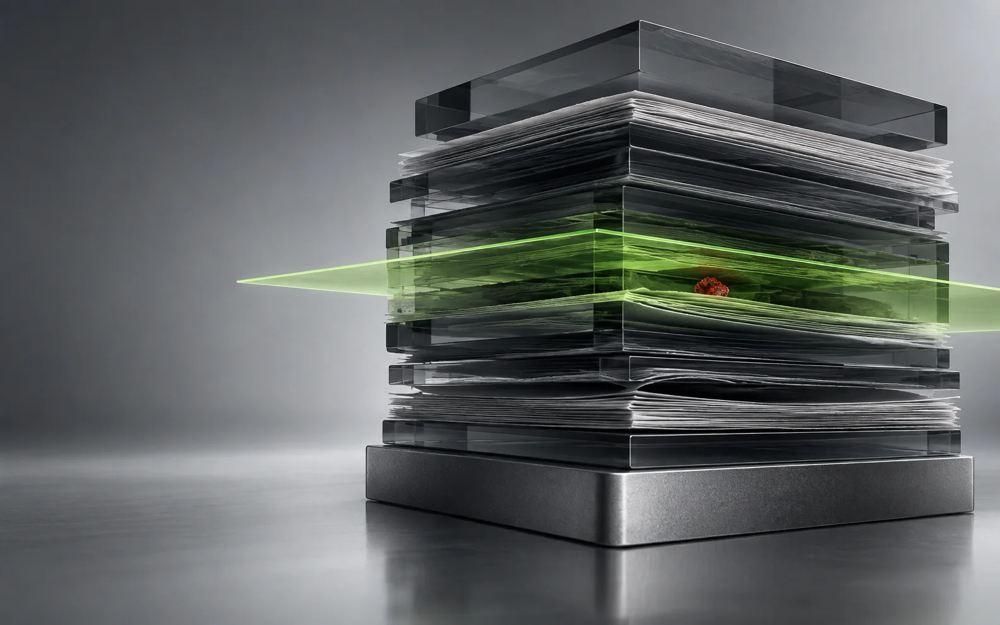

Known advisories, hashes, typosquats, and uncertain versions.
01
Do not run it yet
Unknown code.
Known risk.
repyy inspects cloned repositories locally before install scripts get their first chance to act.
Repositories ask for trust in a single command.
We think trust should arrive after the evidence.
What gets inspected
Seven distinct surfaces. One local pass.
Hooks, registries, binaries, and download chains.
02Shell bridges, dynamic imports, reverse shells, and auth bypasses.
03Private keys, cloud credentials, tokens, wallets, and browser data.
04
The code never moves.Your source stays on your machine.
Small command.
Hard boundary.
No package install. No target build. No source upload. Git is used only when you ask to clone a remote.
repyyscan
$ repyy scan ./assignment
Put a checkpoint before execution.
Available through Homebrew, Scoop, GitHub Releases, and Go.